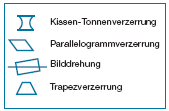

|
| Check "Bildschirmdarstellung" |
| Mit der folgenden Checkliste kann die individuelle Anpassung der Software an den Benutzer überprüft werden.. |
|
|
| Gestaltungskriterium |
Mögliche Maßnahmen |
Mein Arbeitsplatz entspricht dem Kriterium |
Bemerkungen |
- Der Bildschirm ist so eingestellt, dass die Zeichen ausreichend groß und deutlich zu erkennen sind.
|
Helligkeit und Kontrast am Gerät einstellen. |
|
|
|
Zeichendarstellung am Gerät einstellen. |
|
|
- Die Zeichenhöhe entspricht den Angaben:
- 500 mm Sehabstand;
3,2 bis 4,5
- 600 mm Sehabstand;
3,9 bis 5,5
- 700 mm Sehabstand;
4,5 bis 6,4
- 800 mm Sehabstand;
5,2 bis 7,3 mm
|
Die Zeichenhöhe eines Großbuchstabens
messen, Schablone
oder Lineal verwenden,
gegebenenfalls die Schriftgröße
per Software einstellen
oder die Auflösung ändern
– zum Beispiel unter Windows
über Systemsteuerung. |
|
|
- Störende Veränderungen von
Zeichengestalt oder Zeichenort
durch Bildstabilitäts- oder
Bildgeometriefehler treten
nicht auf.

|
Geometriefehler durch Anlegen
eines Papiers an waagrechte/
senkrechte Linien feststellen.
Korrektur durch Einstellen der
Anzeige am Bildschirm. |
|
|
- Der Bildschirm flimmert nicht. (CRT-Bildschirm)
|
Bildwiederholfrequenz von
mind. 85 Hz, besser 100 Hz
einstellen (Grafikkarte, Bildschirm
und Bildschirmtreiber
müssen aufeinander abgestimmt
sein, gegebenenfalls eine niedrigere
Auflösung - zum Beispiel unter Windows über Systemsteuerung -
einstellen). |
|
|
- Bei einer Gestaltung (Kodierung) mit mehreren Farben werden nur wenige
Farben verwendet (maximal sechs).
- Die verwendeten Farben sind ausreichend unterscheidbar.
- Gesättigte blaue oder rote Farben werden nicht zusammen verwendet,
weil das Auge beide Farben nicht gleichzeitig scharf einstellen kann.
- Für Textverarbeitung wird auf farbige Darstellungen verzichtet (Kontrast
wird dadurch besser den Umgebungsbedingungen angepasst und visuelle
Belastungen durch mehrfarbige Darstellung werden vermieden).
- Für Zeichen und Flächen, für die gleiche Farben vorgesehen sind,
treten keine wesentlichen Farbunterschiede auf.
|
|
|
|
- Bereits nach dem Start des Rechners erscheint eine grafische Oberfläche,
die einem aufgeräumten Schreibtisch entspricht.
|
Bildschirm entsprechend einstellen und Symbole der Ordner gruppieren. |
|
|
- Die Oberfläche der Software besitzt einen einfarbigen Untergrund ohne
Muster und Bilder.
|
Bildschirm entsprechend einstellen. |
|
|
- Die Fenster-Darstellungen
heben sich eindeutig von
ihrem Untergrund (Umgebung)
ab - zum Beispiel durch einen
klar erkennbaren Rahmen.
|
Bildschirm entsprechend einstellen. |
|
|
- Die Inhalte in den Fenstern sind eindeutig strukturiert.
|
Bildschirm entsprechend einstellen. |
|
|
- Es werden nur Informationen
in einem Fenster dargestellt,
die zur aktuellen Aufgabenbearbeitung
tatsächlich benötigt
werden.
|
|
|
|
- Fenster erscheinen möglichst
im Vollbildmodus auf der
Bildschirmoberfläche.
Bei Arbeiten mit zwei Fenstern
sind diese so auszudehnen,
dass beide Fenster die gesamte
Bildschirmanzeige vollständig
abdecken.
|
|
|
|
- Die Zeilenlänge auf Textseiten
ist auf circa 80 Zeichen mit
kleineren Buchstaben eingestellt.
|
|
|
|
- Der Zeilenabstand beträgt
mindestens 120 Prozent der
Schriftgröße.
|
Programm entsprechend einstellen. |
|
|
- Die Texte werden in der Regel linksbündig formatiert.
|
Programm entsprechend einstellen. |
|
|
- In Fließtexten wird auf die alleinige Verwendung von Großbuchstaben
verzichtet.
|
|
|
|
|
|
|
|
- Die automatische Sicherung ist vom
Nutzer eingeschaltet und nach seinen
Bedürfnissen eingestellt.
|
Programm entsprechend einstellen. |
|
|
- Programme, die häufig benutzt
werden, werden mit dem Start
des Betriebssystems automatisch
gestartet.
|
Programm entsprechend einstellen. |
|
|
- Symbole der Programme zur
Aufgabenbearbeitung liegen
auf dem Desktop.
|
Bildschirm entsprechend einstellen. |
|
|
- Automatische Funktionen (Recht-
schreibprüfung, Trennungen, ...) sind
vom Nutzer eingeschaltet und nach
seinen Bedürfnissen eingestellt.
|
Programm entsprechend einstellen. |
|
|
- Die akustischen Signale sind der
Arbeitsaufgabe angepasst und stören
Sie und Ihre Kollegen/Kolleginnen
nicht unnötig.
|
Programm entsprechend einstellen. |
|
|